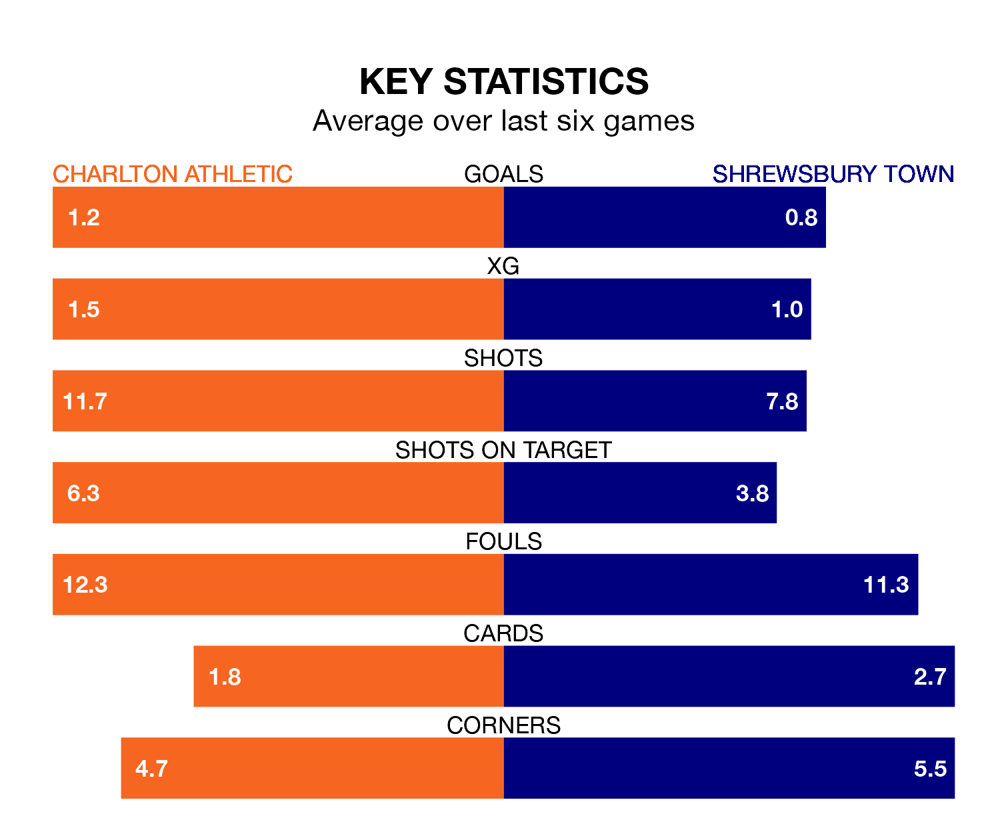

Charlton Athletic face Shrewsbury Town on Saturday seeking to protect their formidable unbeaten run in EFL League One.
The Addicks are unbeaten in 13, with four wins and nine draws, ahead of the 3pm kick-off.
They face a Shrewsbury team who have won three and drawn four over the same number of games.
In Alfie May, Charlton have the league's most on-form striker so far this season. He has notched 23 goals in 41 appearances.
His goal rate of one every 146 minutes is much quicker than that of Daniel Udoh, Shrewsbury's top scorer with a goal every 394 minutes, and a total of eight goals in 38 games.
With 33 goals in 44 games so far this season, Town are the league's lowest scorers with 0.8 goals per game. And they are conceding more than average, letting in 63 goals at a rate of 1.4 per game.
Athletic, meanwhile, are above average scorers, with 1.4 goals per game, compared to a league average of 1.3. They have also conceded 1.4 goals per game.
In the last 10 years, Charlton and Shrewsbury have played each other on 15 occasions. Charlton won seven of them, Shrewsbury five, and they drew three times.
On average, the Addicks scored 1.6 goals and the Shrews 0.8 in those matches.
Their last meeting was on September 30, when they played out a 0-0 draw.
The Shrews are 18th in the table after 44 games, of which they have won 13 and drawn eight, earning 47 points.
The Addicks are one place ahead of the away team in 17th, with 11 wins and 19 draws putting them on 52 points.
Charlton's last match was on April 13, a 1-1 draw against Cambridge United, with Connor Wickham getting the goal for the Addicks.
Shrewsbury drew 2-2 with Bolton Wanderers last time out, on Tuesday, with Jordan Shipley and Udoh on the scoresheet.
Saturday's match will be refereed by Daniel Middleton, who has taken charge of 11 EFL League One games so far this season, issuing three red cards and booking 35 players. He has awarded four penalties.
The last Charlton game Middleton refereed was a 1-0 away loss to Leyton Orient on December 26. His last Shrewsbury match was their 2-0 loss away at Wigan Athletic on October 28.
Updated: 15:40 (UTC), 18/04/24